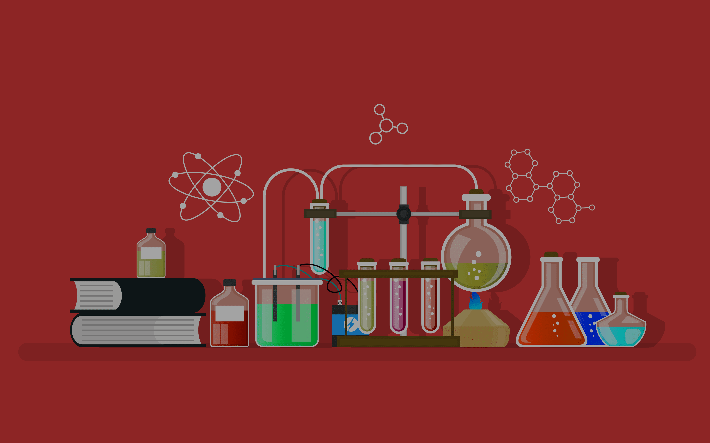

SCIENCE PÅ RYSENSTEEN GYMNASIUM

Læs dette hvis du vil have en meningsfuld fremtid
Hvorfor du burde vælge en naturvidenskabelig studieretning her på Rysensteen:
Rysensteen Gymnasium har i alt 3 forskellige varianter af naturvidenskabelig studieretninger. Har du interesser for problemstillinger og løsninger på Matematik, fysisk, kemi eller biologiske udfordringer, kan du vælge blandt Science Almen, Fyma og Biotek. Naturvidenskab er en af de ældste og vigtigste akademiske discipliner og dækker en lang række forskellige emner. På grund af dette kan naturvidenskab føre til mange gode muligheder for de studerende og deres fremtid. Så hvorfor studere naturvidenskab? Hvorfor er det så vigtigt at få flere studerende til at interessere sig for at studere naturvidenskab her på Rysensteen? For det første hjælper videnskaben os med at forstå verden omkring os. Alt, hvad vi ved om universet, lige fra hvordan træer formerer sig til hvad et atom består af, er et resultat af videnskabelig forskning og eksperimenter. Menneskets fremskridt gennem historien har i høj grad været baseret på videnskabelige fremskridt. Fra vores viden om tyngdekraften til avanceret medicin har studerende inden for naturvidenskab formet vores moderne verden. Derfor ønsker vi på Rysensteen, at du vælger en naturvidenskab-studieretning her på Rysensteen, fordi vi mener, at du kan gøre en forskel.